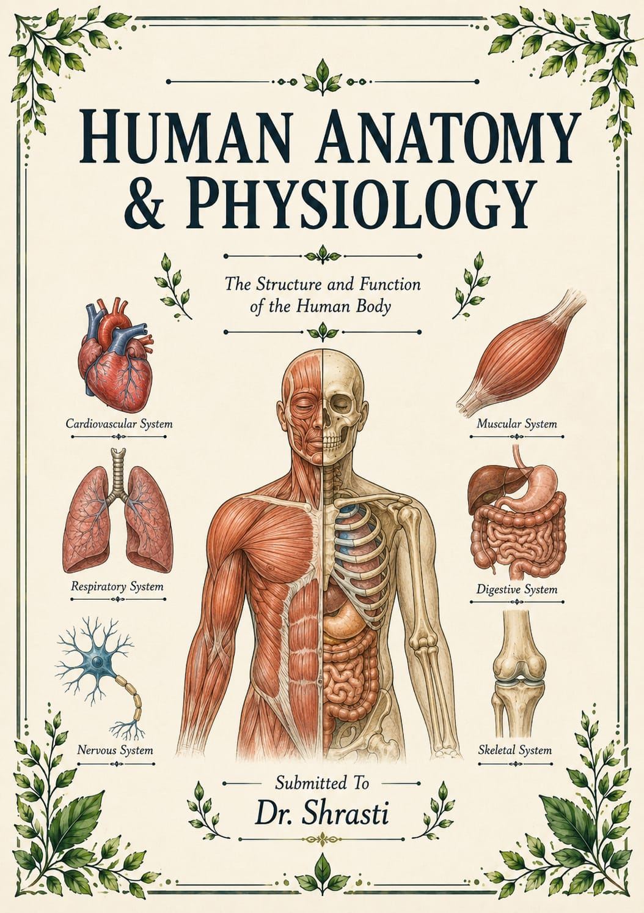
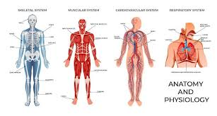
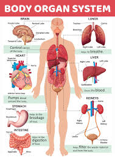

Anatomy and physiology are the twin foundational sciences of the human body: anatomy explores the physical structures and relationships of body parts, while physiology investigates how these structures function together to sustain life. Together, they reveal how the body's form is perfectly suited to its complex tasks.The human body is an incredibly complex, highly organized biological machine made of trillions of cells. To understand how it works, the study of human biology is traditionally divided into two core, interconnected disciplines
The Scope of Human Anatomy and Physiology:
The scope of human anatomy and physiology is incredibly vast, serving as the foundational bedrock for nearly all modern health and biological sciences. Its primary applications and areas of study include
Medical and Clinical Foundations: Mastering anatomy and physiology is the prerequisite for understanding diseases, surgery, and pharmacology. It allows healthcare professionals to grasp pathology (how diseases alter normal structure and function), which leads to accurate diagnoses and effective treatments.Biomedical Research: The scope extends to cellular and molecular biology, where researchers study the chemical processes that govern life, leading to the development of new therapeutics and medical technologies.Health and Allied Professions: It forms the basis for specialized fields such as nursing, physical therapy, dentistry, and nutrition. Knowing how the musculoskeletal and nervous systems are structured and function directly informs rehabilitation and patient care.Sports Science and Physical Education: Understanding the physiological responses to physical exertion (exercise physiology) allows trainers and athletes to optimize performance, enhance physical fitness, and prevent or treat sports injuries.Health Education: It provides individuals with a functional understanding of their own bodies, empowering lifestyle choices that support long-term wellness and disease prevention.

Impurities in Human Anatomy and Physiology:
In human anatomy and physiology, "impurities" primarily refer to metabolic wastes. These are surplus, unneeded, or potentially toxic byproducts of cellular respiration and metabolism that must be continuously excreted to maintain a stable internal environment (homeostasis).The processing and elimination of these metabolic impurities are handled by interconnected organ systems:
Urinary System: The kidneys act as the primary filtration organ. They filter blood to remove nitrogenous wastes (urea, uric acid, creatinine), excess salts, and water, which are then excreted as urine.
Respiratory System: Cellular respiration produces carbon dioxide, a metabolic impurity that diffuses into the blood and is transported to the lungs to be exhaled as a gas.
Integumentary System: The skin excretes trace metabolic wastes (such as excess water, salts, and small amounts of urea) through sweat.
Digestive System: The liver converts highly toxic ammonia into less toxic urea and processes other biological toxins or worn-out red blood cells, preparing them for elimination through bile and feces.The dysregulation of these systems can lead to a dangerous buildup of impurities in the blood, resulting in severe conditions like metabolic acidosis or uremia